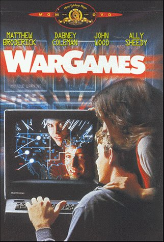
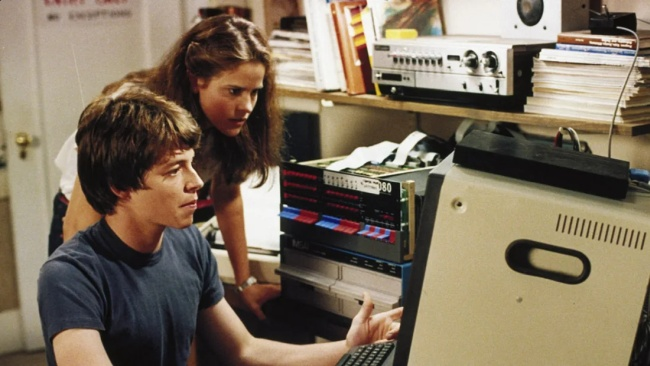

Movie review by : SFAM
Year : 1983
Directed by : John Badham
Written by : Lawrence Lasker & Walter F. Parkes
Degree of Cyberpunk visuals : Very Low
Correlation to Cyberpunk themes : Medium
Rating : 7/10
Key cast members :

Overview: WarGames is a wonderful 80s film that captures both the cold war fears and the budding hacker mentality. Mathew Broderick plays a geek teenager named David, who has fun hacking into open modems to noodle around with unidentified computer systems. He finds one computer that likes to play chess. Eventually, he finds this computer also likes to play Global-thermonuclear war. Unfortunately, while playing, he unknowingly starts the Strategic Air Command computer's countdown to thermo-nuclear war.

This movie is lots funnier when we consider the DoD IT fuckups from the late 70s in building computer-based command and control systems such as this. Twice, in the middle of the night, President Carter got racked out of bed to be told that the Soviets had launched - only a minute later to be told, "sorry, it was just test data" that was being run on their new $100 Million dollar computer system. After the second such instance, President Carter made it known that he no longer found this amusing. Unfortunately, the designers of this system in their infinite wisdom had the specifications written so that test simulations had to be performed on the live system. For obvious reasons, this is about as bad an idea as has been considered, let alone implemented. They ended up having to spend an additional 50 million to build a test system, that was thereafter known as "Bozo the Clone".
The Bottom Line: It is definitely a stretch to call WarGames cyberpunk. The only thing that makes it so is the pre-Terminator plotline concerning the Military's attempt to allow machines to manage key decisions for society and the hacker subplot. While not as dystopic as Colossus - the Forbin Project (still awaiting review), the theme is executed competently, especially when combined with what was then the advent of the hacker movement. This is well acted, and for the most part, a decent "pre-cyberpunk" style movie.